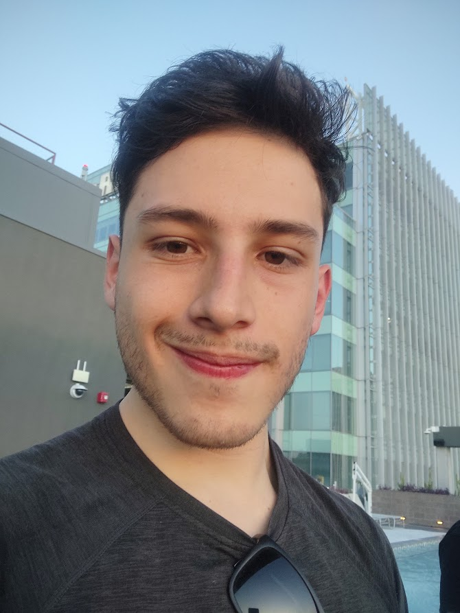
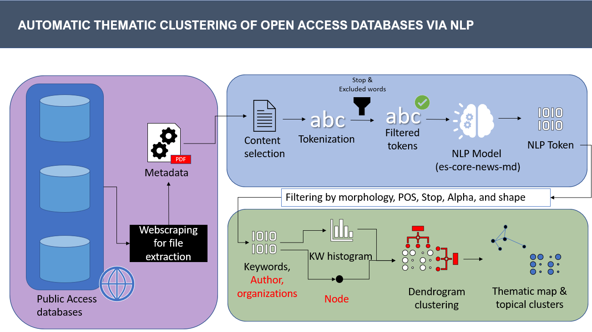

Neuroscience & AI
Deciphering movement disorder biomarkers, real-time neural decoding, graph neural networks, and semantic machine learning models.

Digital Neuroscience & Neuroimaging
Enrolled in the Specialized Master's program at the University of Fribourg. Developing digital biomarkers, computational neural models, and AI automation for clinical neuroscience.
- Recipient of the 2026 Innovation Grant from Innovation Club Fribourg.
- Presenting "The Unfair Advantage: Practical AI Automation" at Fribourg Teach & Learn Days.

16-Channel sEMG 3D Hand Pose
Engineered a neural signal-processing pipeline downsampling high-density 16-channel surface electromyography array inputs to continuously decode continuous 3D hand and finger kinematics in real-time.
- Built in Google Colab Pro with spatial spatial filtering and temporal convolution.
- Presented at the Neuromatch Impact Scholars conference.

Movement Disorder Prognosis
Conducted precision movement disorder research evaluating structural and functional imaging biomarkers, clinical rating scales, and pharmacological progression in Parkinson's and Essential Tremor cohorts.
- Applied multimodal clinical telemetry for differential diagnosis.
- Generated 3D brain and thalamic structural models for tremor networks.

Solar Radiance with GNN & LSTM
Long-term spatiotemporal solar irradiance estimation combining meteorological sensor network graphs with recurrent Long Short-Term Memory units (with PI Dr. Luis Felipe Giraldo).
- Modeled cross-station atmospheric interactions as dynamic graph edges.
- Surpassed baseline univariate forecasting models on multi-horizon benchmarks.

Automated Thematic Clustering
NLP and graph-theoretic web scraping engine developed at the Mathematical & Computational Biology Group for the Harmonize Project to predict Dengue spread over vulnerable territories.
- Extracted semantic linkages from unorganized public epidemiological databases.
- Generated automated dendrograms and adjacency matrices for disease tracking.